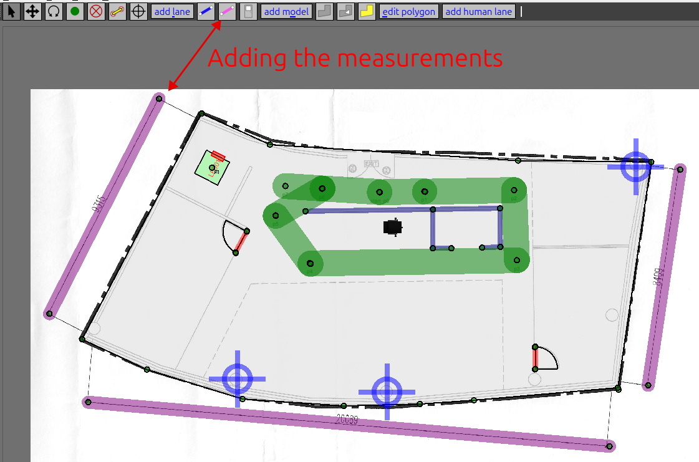

open-rmf_getting_started
This is a OP1319 repository that contains a getting started tutorial to use the Open-RMF and its tools.
Roadmap
There are a few options to follow:
Run the Open-RMF demos: install the Open-RMF from binaries and follow the tutorial until the rmf_demos section.
Create a custom map: install the Open-RMF from binaries and follow the tutorial until the custom map section.
If you wish to use the rmf_web: install from binaries and follow the tutorial until the rmf_web section
If you wish to have full control over the Open-RMF: install from source and do all the sections in this tutorial.
README sections
Extra tutorials:
ROS 2
One of the main tools used in the project is ROS 2, which is used to communicate with the robots. This is the first thing to be installed. Install ROS 2 by following the ROS 2 official install guide.
Important: In the ROS 2 official install guide, they recommend to install the ROS 2 desktop. However, we recommend everyone to install the ROS 2 full. By installing the ROS 2 full, the Gazebo Harmonic is installed automatically. Thus, you may skip the Gazebo section, you will only need the Gazebo ROS 2 section. To install the ROS 2 full, when you reach the install part of the ROS 2 install guide, run the command:
sudo apt install ros-jazzy-desktop-full
In the ROS 2 official install guide, they install only the ROS 2 desktop.
Gazebo installation
Another main tool used in the project is the Gazebo simulator. We are using the Gazebo Harmonic.
If you installed the ROS 2 full in the ROS 2 section, there is no need to install the Gazebo Harmonic again and you may skip this section. Continue in the Gazebo ROS 2 section. For the sake of documentation, and for the case we want to install only the ROS 2 desktop in the final application, we will leave this section here.
We need to install both the Gazebo and the Gazebo ROS 2 packages. First, install Gazebo. If only the Gazebo ROS 2 is installed, the demo examples may not run correctly.
Follow the Gazebo Harmonic installation guide. Here follows a copy of the instructions.
Harmonic binaries are provided for Ubuntu Jammy (22.04) and Ubuntu Noble (24.04). The Harmonic binaries are hosted in the packages.osrfoundation.org repository. To install all of them, the metapackage gz-harmonic can be installed.
First install some necessary tools:
sudo apt-get update
sudo apt-get install curl lsb-release gnupg
Then install Gazebo Harmonic:
sudo curl https://packages.osrfoundation.org/gazebo.gpg --output /usr/share/keyrings/pkgs-osrf-archive-keyring.gpg
echo "deb [arch=$(dpkg --print-architecture) signed-by=/usr/share/keyrings/pkgs-osrf-archive-keyring.gpg] http://packages.osrfoundation.org/gazebo/ubuntu-stable $(lsb_release -cs) main" | sudo tee /etc/apt/sources.list.d/gazebo-stable.list > /dev/null
sudo apt-get update
sudo apt-get install gz-harmonic
All libraries should be ready to use and the gz sim app ready to be executed.
If the gazebo window does not load correctly, check the multicast issue.
Gazebo ROS 2 installation
This Gazebo ROS 2 is required to run the Open-RMF demos. Thus, do not skip this section.
If you are using ROS 2, follow this tutorial to install the ROS 2 Gazebo Harmonic
Install it with :
sudo apt-get install ros-jazzy-ros-gz
Open-RMF
The Open-RMF is the other main tool used in the project. It is a robot fleet management system. It is ROS 2 based. To install it, you can follow the official install guide. Since this is the most important part of the project, the installation steps are copied here. For the sake of clarity, some comments were removed. See them below.
Preparation to install the Open-RMF
Instruction below are aimed at Ubuntu 24.04 with ROS 2 Jazzy.
First please install ROS 2 via binary debians as mentioned in the ROS 2 section.
Install all non-ROS dependencies of Open-RMF packages,
sudo apt update && sudo apt install ros-dev-tools -y
The rosdep helps install dependencies for ROS packages across various distros and will be installed along with ros-dev-tools. However, it is important to update it.
# run if first time using rosdep.
sudo rosdep init
rosdep update
Update colcon mixin if you have not done so previously.
colcon mixin add default https://raw.githubusercontent.com/colcon/colcon-mixin-repository/master/index.yaml
colcon mixin update default
Choose your Open-RMF installation type
If you plan to develop new tools for the Open-RMF install it from source using the install from source section. if you just want to test the Open-RMF demos and do not plan to modify the Open-RMF source code install it from binaries.
Binary installation
First follow the instruction in the Preparation section. Now, install Open-RMF debian packages:
sudo apt update && sudo apt install ros-jazzy-rmf-dev
Note: This will install all necessary debian packages to run Open-RMF except for those in rmf_demos for reasons described in this issue. To install the demos check the rmf_demos section.
Building Open-RMF from source
Follow the official guide, which is also presented below.
Install Gazebo before installing the Open-RMF from source. Follow the instructions in the Gazebo installation section
Do not try to install both ways (binary packages and from source).
First follow the instruction in the Setup section.
Due to newer changes in the source code, there might be conflicts and compilation errors with older header files installed by the binaries. Hence before proceeding, make sure to uninstall all Open-RMF binaries for the ROS 2 distro that will be sourced for the build.
sudo apt purge ros-<distro>-rmf* && sudo apt autoremove
Download the source code
Open-RMF is a collection of several repositories/packages. The rmf.repos provides a snapshot of these packages. This repository stores different versions of this file depending on the ROS 2 distribution and version of the release. Depending on the use case, you may choose to download this file from one of the following branches in this repository:
main: Latest version of all packages which may or may not have a binary release yet. This is recommended for development and bug fixes.<distro>: The latest version of the packages for a specific ROS 2 distro. This may be different frommainas new API/ABI breaking features merged intomainwill not be backported into<distro>branches. The packages downloaded from<distro>may have changes that are not yet available in binaries.<distro>-release: Where<distro>is a supported ROS 2 distribution (eg.humble). The version of packages here will correspond to those of the latest binaries available for this distro.release-<distro>-YYMMDD: A tag for a specific<distro>where the version of packages correspond to those of the binaries available onYYMMDD. See Releases for additional information for each release. This is useful if users would like to build packages from an older release.
Setup a new ROS 2 workspace and pull in the demo repositories using vcs. Replace main with the branch of your choice.
mkdir -p ~/rmf_ws/src
cd ~/rmf_ws
wget https://raw.githubusercontent.com/open-rmf/rmf/main/rmf.repos
vcs import src < rmf.repos
Update your rosdep definitions and install dependencies via rosdep.
cd ~/rmf_ws
sudo apt update
rosdep update
source /opt/ros/jazzy/setup.bash # replace jazzy with preferred ROS 2 distro.
rosdep install --from-paths src --ignore-src --rosdistro $ROS_DISTRO -y
NOTE: We strongly recommend compiling Open-RMF packages with clang as compiler and lld as linker.
sudo apt update
sudo apt install clang clang-tools lldb lld libstdc++-12-dev
Compile the workspace after sourcing the ROS 2 distro of choice.
cd ~/rmf_ws
export CXX=clang++
export CC=clang
colcon build --mixin release lld
The build process will require python cmake module to be installed. On Ubuntu 24.04 it is not possible to install it system wide. Thus, create a virtual environment with all the system packages and build within the package:
cd ~/rmf_ws
virtualenv --system-site-packages venv_build
. venv_build/bin/activate
pip install cmake
export CXX=clang++
export CC=clang
colcon build --mixin release lld
NOTE: The first time the build occurs, many simulation models will be downloaded from Gazebo Fuel to populate the scene when the simulation is run. As a result, the first build can take a very long time depending on the server load and your internet connection (may be up to an hour). To build without downloading models append
--cmake-args -DNO_DOWNLOAD_MODELS=Onto thecolcon build.
After the build is completed, go to the installing the rmf_demos section.
Installing the rmf_demos
If you installed the Open-RMF from source following the source install section, you can skip the rmf_demos installation because they already come together with the source code.
To build rmf_demos from source, first determine the version of rmf_demos that corresponds to the latest binary release for your distro. In this project we will use the jazzy version.
Other versions of rmf_demos for this release can be found in the rmf.repos file in the humble-release branch of this repository, for example here.
Next create a ROS 2 workspace and build rmf_demos from source. Replace the 2.0.3 tag below with the version of rmf_demos for your distribution.
mkdir ~/rmf_ws/src -p
cd ~/rmf_ws/src
git clone https://github.com/open-rmf/rmf_demos.git
cd rmf_demos
git checkout jazzy
If your computer does not allow installing python packages system wide, you will need to create a python virtual environment. Some of the Open-RMF packages will require additional python packages such as Python
cmake.
The virtualenv is a self contained python environment separated from the system wide python installation. We need to create a virtualenv because Ubuntu 24.04 does not allow installing python packages system wide.
0. Install virtualenv: sudo apt install virtualenv
Go to the rmf_ws:
cd ~/rmf_wsCreate the venv with the system wide python packages (check this link). We need to create the virtualenv with all the packages because of the ROS 2 packages:
virtualenv --system-site-packages venv_rmf_ros2Activate it:
. venv_rmf_ros2/bin/activatePython cmake is required :
pip install cmake
Now, build the workspace after the virtual environment is activated:
cd ~/rmf_ws
colcon build
If you installed the open-rmf from the binary packages, you need to install some ROS 2 dependencies to run the demo examples correctly:
cd ~/rmf_ws
rosdep install -i --from-path src --rosdistro jazzy -y
colcon build
The command above should fix any missing dependency to run the demos.
Testing a demo
To run some demonstrations of Open-RMF in simulation, see README in rmf_demos. There you can find the command to run different ready demos from Open-RMF. Do not forget to change to the jazzy branch on the rmf_demos repository.
Try running the hotel demo:
cd ~/rmf_ws
source /opt/ros/jazzy/setup.bash
source ~/rmf_ws/install/setup.bash
ros2 launch rmf_demos_gz hotel.launch.xml
The demo should open with RViz and Gazebo.
If the gazebo window does not load correctly, check the multicast issue.
Next, run the following command in a new terminal to command the robots in the scene:
source /opt/ros/jazzy/setup.bash
source ~/rmf_ws/install/setup.bash
ros2 run rmf_demos_tasks dispatch_patrol -p restaurant L3_master_suite -n 1 --use_sim_time
ros2 run rmf_demos_tasks dispatch_clean -cs clean_lobby --use_sim_time
If everything works, the robots should start moving.
To run some demonstrations of Open-RMF in simulation, see README in the rmf_demos repository. Always remember to change to the jazzy branch in the rmf_demos repository.
Traffic Editor
This tutorial was copied from the original traffic editor repository.
Installation
This repository is structured as a collection of ROS 2 packages and can be built using colcon. For full installation of RMF, please refer to here.
The rmf_building_map_tools package requires the following Python 3 dependencies to generate worlds:
sudo apt install python3-shapely python3-yaml python3-requests
Clone the repository to your computer:
git clone https://github.com/open-rmf/rmf_traffic_editor.git
Go to the repository folder and source ROS 2 and the previous installed rmf workspace:
cd rmf_traffic_editor
source /opt/ros/jazzy/setup.bash
source ~/rmf_ws/install/setup.bash
You will need python cmake to build the ROS 2 rmf traffic editor packages. Thus, we need to create and activate a python virtual environment to install cmake python since Ubuntu 24.04 does not allow installing python packages system wide:
virtualenv --system-site-packages venv_rmf_traffic_editor
. venv_rmf_traffic_editor/bin/activate
After activating the virtualenv, install python cmake package:
pip install cmake
Now, you can build the packages form the rmf_traffic_editor inside the rmf_traffic_editor folder:
cd ~/rmf_traffic_editor
colcon build
To test if the traffic editor installation was successfull source the rmf_traffic_editor and run it:
source ~/rmf_traffic_editor/install/setup.bash
traffic-editor
Overview
Most things here were copied from the official open-rmf book.
The traffic-editor is composed of the GUI and other tools to auto-generate simulation worlds from GUI outputs. The GUI is a interface that create and annotate 2D floor plans with robot traffic along with building infrastructure information. Also, existing floor plans of the environment, such as architectural drawings can be opened, which simplify the task and provide a “reference” coordinate system for vendor-specific maps. For such cases, traffic-editor can import these types of “backgroud images” to serve as a canvas upon which to draw the intended robot traffic maps, and to make it easy to trace the important wall segments required for simulation.
The traffic_editor GUI projects are stored as yaml files with .building.yaml file extensions. Although the typical workflow uses the GUI and does not require hand-editing the yaml files directly, we have used a yaml file format to make it easy to parse using custom scripting if needed. Each .building.yaml file includes several attributes for each level in the site as annotated by the user. An empty .building.yaml file appears below. The GUI tries to make it easy to add and update content to these file.
levels:
L1: doors:
- []
- drawing:
- filename:
- fiducials:
- elevation: 0
- flattened_x_offset: 0
- flattened_y_offset: 0
- floors:
- parameters: {}
- vertices: []
- lanes:
- []
- layers:
{}
- measurements:
- []
- models:
- {}
- vertices:
{}
walls:
{}
lifts:
{}
name: building
At this point, we recommend you to read the official rmf book sections about the traffic-editor. Please read all the sections from GUI Layout until the Conclusion section. This tutorial will make you learn how to create a new scenario to be used with the open-rmf.
Tips for the rmf-traffic-editor tutorial
Some ready map examples can be found in your rmf_ws folder where you installed the open-rf. They are under the folder:
/rmf_ws/src/demonstrations/rmf_demos/rmf_demos_maps/mapsWe recommend to do the tutorial with the office map, which is the same from the official tutorial for the traffic-editor.
To use run the traffic-editor tutorial, we highly recommend you to copy (duplicate) the office map to another folder and open it from there instead of working on the
rmf_demos_maps.The first thing you should do after you open the traffic-editor and load your map .png file is to add the measurements on all the known measurements in the map. After adding the measurements (the pink lines), save the map, close the editor and open it again. The traffic-editor will automatically rescale everything. 
Adding floor polygon: first add the vertices (green dots) of the polygon and next connect them with the floog polygon tool.
If for some reason the zooming of the map behaves strange or if everything in the map vanish for every opened map. Click on the View tab and reset the zoom. The map should appear again.
Adding feature points: make sure you select the correct level when adding the feature point. Select the level map to add points on the level map and select the map_scan (the name you gave for the scan of the map) to add features to the scan. Connect the features from the level with the features of the scan using the Add constraint option. Last, click on
Edit > Optimize Layer Transform. The scan and the map should align automatically.
Running a custom map
Follow the tutorial on the custom map tutorial page.
Additional tools
There are some additional tools that may be usefull for some more advanced applications with Open-RMF.
Getting started with the rmf-web
This tutorial was copied from the official rmf-web repository
Prerequisites
We currently support Ubuntu 24.04, ROS 2 Jazzy and the latest Open-RMF release. Other distributions may work as well, but is not guaranteed.
Install pnpm and nodejs
curl -fsSL https://get.pnpm.io/install.sh | bash -
# after installing, source your bashrc file
source ~/.bashrc
pnpm env use --global lts
For Debian/Ubuntu systems,
sudo apt install python3-pip python3-venv
Installing Open-RMF Web
To run the Open-RMF web with the demos, you need to have followed the rmf_demos section.
Get the rmf-web
Clone the rmf-web repository .
git clone https://github.com/open-rmf/rmf-web.git
Install dependencies
Run the following commands to install the rmf-web things.
cd path/to/rmf-web
pnpm install
Launching for development
Source Open-RMF and launch the demo dashboard in development mode,
# For binary installation
source /opt/ros/jazzy/setup.bash
# For source build: source the rmf_ws you installed in the steps above
source /path/to/your/rmf/workspace/install/setup.bash
cd path/to/your/rmf-web
cd packages/rmf-dashboard-framework
pnpm start
This starts up the API server (by default at port 8000) which sets up endpoints to communicate with an Open-RMF deployment, as well as begin compilation of the demo dashboard. Once completed, it can be viewed at localhost:5173.
If presented with a login screen, use user=admin password=admin.
Ensure that the fleet adapters in the Open-RMF deployment is configured to use the endpoints of the API server. By default it is http://localhost:8000/_internal. Launching a simulation from rmf_demos_gz for example, the command would be,
ros2 launch rmf_demos_gz office.launch.xml server_uri:="http://localhost:8000/_internal"
Now you can dispatch tasks using the rmf-web interface clicking at localhost:5173.
Configuration
See the api-server docs for API server run-time configurations.
rmf-dashboard-framework allows you to easily build a dashboard.
Docker
Now, to use some open-rmf tools, it will be useful to install docker because some tools provide docker files ready to run (for example, rmf-web).
This instructions were copied from the official docker tutorial.
Prerequisites
To install Docker Desktop successfully, you must:
Meet the general system requirements.
Have an x86-64 system with Ubuntu 22.04, 24.04, or the latest non-LTS version.
For non-Gnome Desktop environments,
gnome-terminalmust be installed:$ sudo apt install gnome-terminal
Note: Although the official docker installation says it requires gnome-terminal, other terminals work as well such as Allacrity and Wezterm. Thus, you can try to use other terminals instead of gnome-terminal.
Install using the apt repository
Before you install Docker Engine for the first time on a new host machine, you need to set up the Docker apt repository. Afterward, you can install and update Docker from the repository.
Set up Docker’s
aptrepository.# Add Docker's official GPG key: sudo apt-get update sudo apt-get install ca-certificates curl sudo install -m 0755 -d /etc/apt/keyrings sudo curl -fsSL https://download.docker.com/linux/ubuntu/gpg -o /etc/apt/keyrings/docker.asc sudo chmod a+r /etc/apt/keyrings/docker.asc # Add the repository to Apt sources: echo \ "deb [arch=$(dpkg --print-architecture) signed-by=/etc/apt/keyrings/docker.asc] https://download.docker.com/linux/ubuntu \ $(. /etc/os-release && echo "$VERSION_CODENAME") stable" | \ sudo tee /etc/apt/sources.list.d/docker.list > /dev/null sudo apt-get update
Note
If you use an Ubuntu derivative distribution, such as Linux Mint, you may need to use
UBUNTU_CODENAMEinstead ofVERSION_CODENAME.Install the Docker packages.
Latest Specific version
To install the latest version, run:
$ sudo apt-get install docker-ce docker-ce-cli containerd.io docker-buildx-plugin docker-compose-plugin
Verify that the installation is successful by running the
hello-worldimage:$ sudo docker run hello-world
This command downloads a test image and runs it in a container. When the container runs, it prints a confirmation message and exits.
You have now successfully installed and started Docker Engine.
Solutions to some reported issues
Gazebo issue with multicast
Thanks to Gabriel Elan (@Elan-gab) for spotting and solving the problem.
When running rmf_demos_gz package, an ‘Gazebo Sim’ window opens alongside with rviz, but does not respond, even after a long time waiting. The cause of this problem is described here and here as a network configuration issue that is caused by firewall restrictions. This troubleshooting suggests enabling multicast, which resolved the problem.
To test the multcast issue run:
ros2 multicast receive
In another terminal, run:
ros2 multicast send
If the receiver does not respond, multicast is being blocked by the firewall. To enable multicast:
sudo ufw allow in proto udp to 224.0.0.0/4
sudo ufw allow in proto udp from 224.0.0.0/4